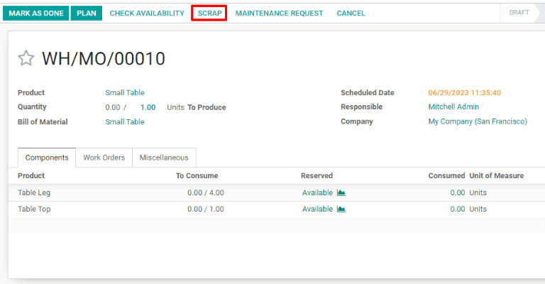
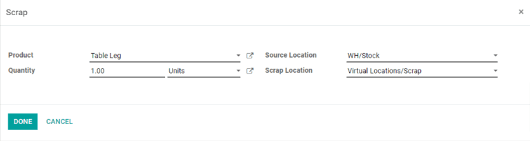
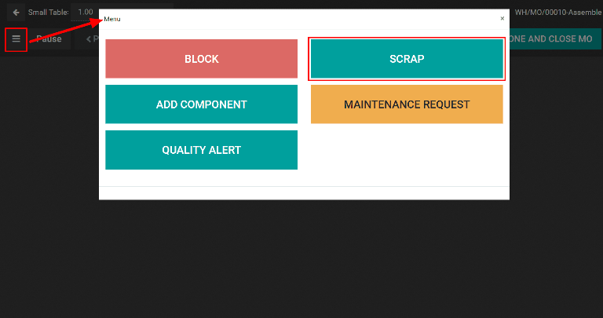

Scrap during manufacturing¶
During the manufacturing process, the need to scrap manufacturing components or finished products may arise. This can be necessary if a component or product is damaged, or unusable for any other reason.
By default, scrapping a component or finished product removes it from physical inventory and places it in a virtual location titled Virtual Locations/Scrap. A virtual location is not a physical space, but rather a designation in Odoo that is used to track items that are no longer in physical inventory.
Odoo Manufacturing allows for both components and finished products to be scrapped within a manufacturing order. The specific type of item that can be scrapped during a manufacturing order depends on the stage of the manufacturing process.
Tip
Scrap orders can be viewed by navigating to . Each scrap order shows the date and time the order was created, along with the product and quantity that was scrapped.
To view the total quantity of each item scrapped, navigate to , then remove the Internal filter from the Search… bar to display all virtual locations. From the list, select the Virtual Locations/Scrap location.
Scrap manufacturing components¶
To scrap components during the manufacturing process, begin by navigating to , then select a manufacturing order or click Create to configure a new one. If a new manufacturing order is created, select a product from the Product drop-down menu, then click Confirm.
Once the manufacturing order has been confirmed, a Scrap button appears at the top of the page. Click the button and a Scrap pop-up window appears.
From the Product drop-down menu on the Scrap pop-up window, select the component that is being scrapped, then enter the quantity in the Quantity field. Finally, click Done to scrap the component.
Important
Before clicking Mark As Done on a manufacturing order, only the components of the finished product can be scrapped, not the finished product itself. This is because Odoo recognizes that the finished product cannot be scrapped before it has been manufactured.
After scrapping a component, continue the manufacturing process using the required quantity of the component that was scrapped. The on-hand stock count for the component that was scrapped updates to reflect both the scrapped quantity and the quantity consumed during manufacturing.
Example
If the manufacturing of a table requires four units of a table leg, and two units of the table leg were scrapped during the manufacturing process, the total quantity of table legs consumed will be six: four units used to manufacture the table plus two units scrapped.
Scrap components from tablet view¶
Components can also be scrapped from the manufacturing tablet view. To do so, select the Work Orders tab on a manufacturing order, then click the 📱 (tablet view) icon for a work order.
With tablet view open, click the ☰ (menu) button at the top left of the screen, then select the Scrap button on the Menu pop-up window. The Scrap pop-up window then appears.
Finally, select a component from the Product drop-down menu and enter the quantity being scrapped in the Quantity field. Click Done to scrap the component.
Scrap finished products¶
Odoo also allows for finished products to be scrapped from a manufacturing order once the order is completed. After clicking Mark as Done, click the Scrap button to make the Scrap pop-up window appear.
Since the components have been consumed to create the finished product, they will no longer appear in the Product drop-down menu. Instead, the finished product will be available as an option. Select the finished product and enter the quantity to be scrapped in the Quantity field. Click Done to scrap the finished product.
The on-hand stock count for the product that was scrapped will update to reflect both the scrapped quantity and the quantity produced during manufacturing.
Example
If five units of a chair were manufactured, but two units were scrapped after manufacturing was completed, then the on-hand inventory of the chair will increase by three: five units manufactured minus two units scrapped.